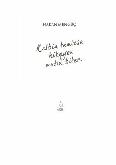

KTQalb pokligi va ichki xotirjamlikka erishish sirlari haqidagi ilhomlantiruvchi kitob.
Ushbu kitob insonning ichki dunyosi, qalb pokligi va hayotiy qiyinchiliklarni yengib o'tish yo'llari haqida hikoya qiladi. Muallif sufizm va hayotiy hikmatlar yordamida o'quvchiga o'zligini topish va baxtli yashash sirlarini ochib beradi. Asar shaxsiy rivojlanish va ruhiy xotirjamlikni qidiruvchilar uchun mo'ljallangan.